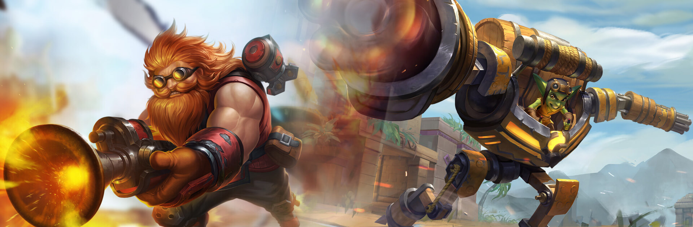

Composición de un Equipo
Todo lo que deberías saber
Descripción
La Composición correcta de un equipo es algo que no se explica en el juego, y muchas veces ni siquiera se hace de jugador en jugador, por lo cual, nosotros te ofreceremos una explicación general de cómo debería ser la correcta composición de un equipo, aunque ten en cuenta que dicha información es solo una sugerencia; aquí no te decimos como estas obligado a jugar, ya que eso depende de ti.
Para empezar, debes saber que los roles primordiales dentro de un equipo son los tanques y los soportes, ya que sin ellos el ganar una partida sería más complicado. Por lo tanto, empecemos hablando de los tanques.
Tanques
El rol de tanque es uno de los más versátiles del juego, ya que, dependiendo del campeón, puedes jugar tanto defensiva como ofensivamente. Esto se debe a que el rol de tanque se divide en 2: Los tanques principales (mayormente defensivos) y los tanques secundarios (mayormente ofensivos).
Por esta razón, se recomienda tener en el equipo un tanque defensivo, el cual se encargará principalmente de mantener zonas del mapa bajo control, como por ejemplo, el objetivo a capturar, así como también protegiendo a sus aliados cercanos, como por ejemplo el soporte.
Por otra parte, los tanques ofensivos son más útiles para apoyar a los miembros del equipo que lo necesiten, por lo general, haciendo daño y asistiendo a matar a los enemigos y protegiendo a sus aliados cuando el tanque principal no pueda hacerlo.
Soportes
Al igual que en el caso de los tanques, el rol de soporte es uno de los más versátiles del juego, ya que, dependiendo del campeón, puedes jugar tanto para curación o para asistencia. Esto se debe a que el rol de soporte se divide en 2: Los soportes principales (con las mejores habilidades de curación) y los soportes secundarios (con buenas habilidades de curación, pero con mejor daño).
Por esta razón, se recomienda tener en el equipo un soporte dedicado mayormente a la curación, el cual se encargará principalmente de mantener a sus aliados con vida el mayor tiempo posible, aunque también puede ayudar a hacer daño a pesar de que esa no es su principal labor.
Por otra parte, los soportes secundarios pueden ayudar a su equipo de distintas maneras, aunque la principal es haciendo daño a los enemigos, pero sin descuidar la curación de sus aliados, ya que también deben ayudar al soporte principal a realizar su tarea cuando les sea posible. El uso de este tipo de campeones es situacional, ya que se debe elegir entre un tanque secundario o un soporte secundario, y la mayoría de las veces es mejor tener dos tanques a dos soportes.

Daños
El rol de daño solo tiene una función en la partida, la cual, como su nombre lo dice, es hacer la mayor cantidad de daño a sus enemigos de manera constante, con el fin de debilitar sus defensas. Otra de las funciones que debe cumplir un campeón de tipo daño es la de ayudar al tanque principal a proteger a su soporte, ya que el es quien los mantiene con vida.
Flancos
Al igual que en el caso de los daños, el rol de flanco solo tiene una función, la cual consiste en asesinar al soporte y daño enemigos, con el fin de debilitar al equipo enemigo. Quizá esto pueda parecer sencillo, pero al jugar en este rol se lleva una gran responsabilidad, ya que, si no se cumple con el rol correctamente, puede que tu equipo sea derrotado, por lo tanto, antes de jugar en este rol es recomendable haber pasado al menos por el rol de daño.
En conclusión
Con lo anterior dicho, podemos concluir entonces que la composición más sólida para un equipo es:
• Un tanque principal
• Un tanque o soporte secundario (el tanque lleva la preferencia)
• Un soporte principal
• Un daño
• Un flanco